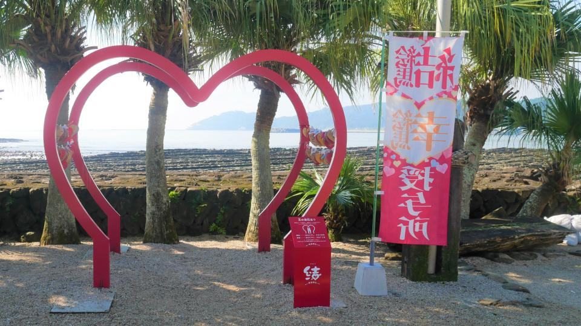

青島
青島は周囲1.5kmほどの小さな島で、島そのものがパワースポットと言われています。
ビロウジュをはじめとする亜熱帯性植物も多く茂り南国の雰囲気が漂います。
島の中央には青島神社があり、縁結びにご利益があると大人気のようです！
神社の入り口付近にあるこのハートのオブジェクトの前で写真撮影を行ってみてはいかがでしょうか！恋が叶うかも...?
また島の周辺には、南国の花々が咲き誇る「宮交ボタニックガーデン青島」や、
オシャレなドリンクやフードメニューのある「青島ビーチパーク」など立ち寄りどころも満載で、バカンスにはもってこいです！
ぜひ、行ってみてくださいね！
引用: 宮崎市観光サイト-青島
フローランテ宮崎
フローランテ宮崎は年間を通して世界各地の植物が観賞でき、広大な敷地内にさまざまなタイプの庭園や広場があります。
季節ごとに様々なイベントがあり、
夏にはランタンとグルメをメインにした「宮崎グルメとランタンナイト」
そしてなんといっても冬のイベント「イルミネーション・フラワー・ガーデン」は毎年の目玉イベントとなっています。
音楽に合わせて光り輝く音と光のコラボレーションは幻想的で、
小さなお子様からご年配の方まで多くの方々が訪れています。
ぜひ、行ってみてくださいね！